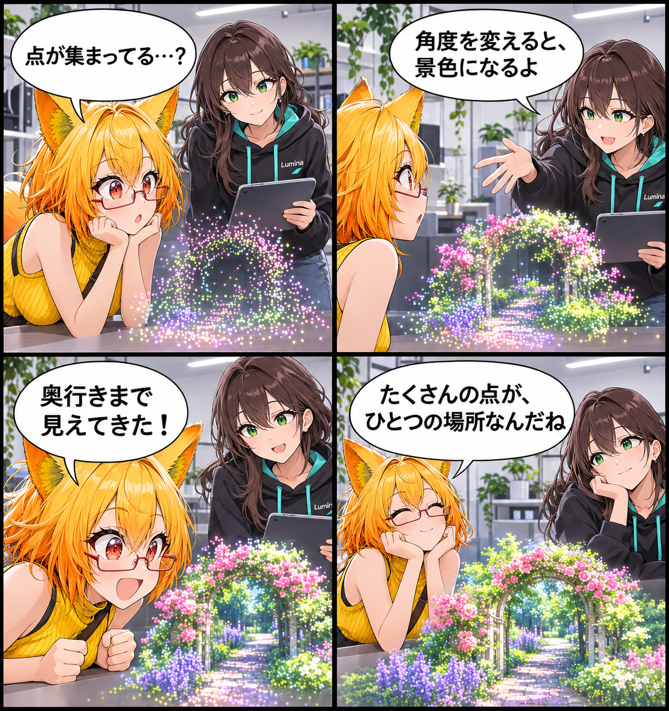

2026.11.08 / Development Log / Feature Spotlight
閑話休題：点の集まりが、景色になる
新規実装の報告ではなく、VRASに既にあるGaussian PLY直接描画を紹介します。色付きの点群が、見る角度に応じて奥行きのある景色へと立ち上がります。
今回は feature-spotlight（機能紹介） です。集計期間は2026-11-07 03:00:00 JSTから2026-11-08 02:59:59 JSTまで、対象はViewerの
main です。集計終了時点のHEADは aa5c7bc823b013fdfc622ec1d7aa1b85c9da8e5e、期間内コミットは0件でした。MainScene.unity の未コミット差分は、期間内に実装された事実を確定できないため実績には含めていません。
点の集まりを、景色として眺める
VRASには、Gaussian PLYの内容を直接描画する既存機能があります。色付きの点の重なりは、ただの平面画像ではなく、視点を変えることで奥行きのある場として見えてきます。
今回の紹介範囲
この機能紹介では、Gaussian PLYを読み込み、空間的な景色として描画する部分に絞っています。対応する見え方はデータの内容に依存します。今回は新しいリリースや当日実装、未確認の対応環境を示すものではありません。
4コマの話
ろひが点の雲に近づくと、ルミナのひと言で景色の輪郭と奥行きが浮かび上がります。最後に残るのは、たくさんの点がひとつの場所らしさを作っているという発見です。
まとめ
VRASのGaussian PLY直接描画は、点群データをシーン内で眺めるための既存機能です。見る角度に合わせて景色が立ち上がる感覚を、静かに楽しめます。